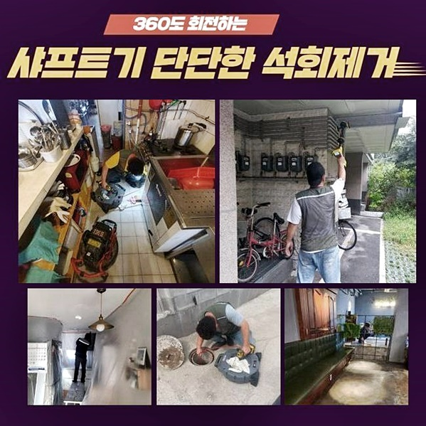
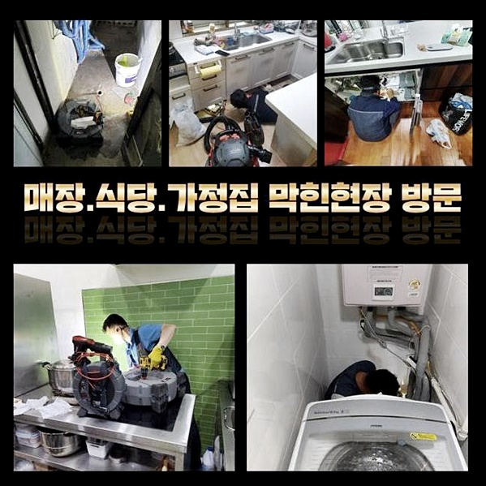
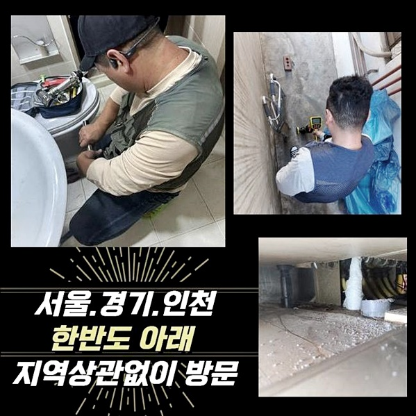
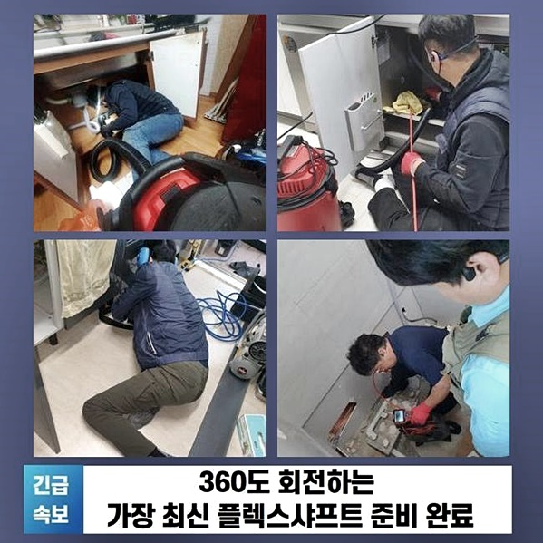
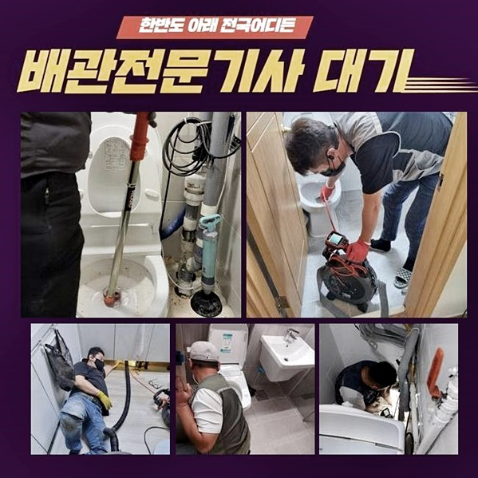
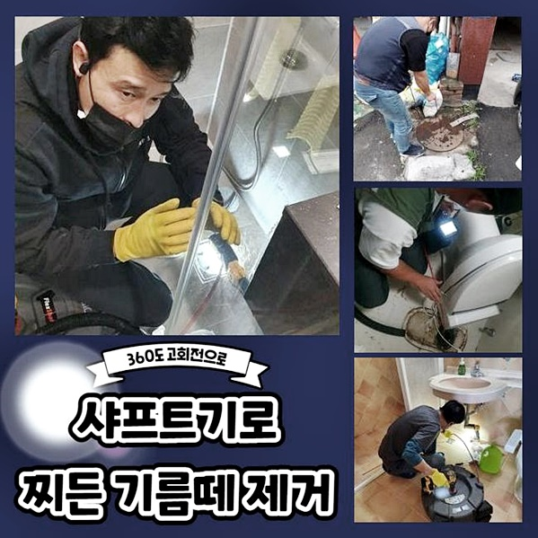

🏠 미추홀구 숭의동하수도막힘 주안동 하수구뚫는곳 누수탐지공사
용인 싱크대막힘 전문 시공 후기

📋 작업 개요
- 위치: 용인
- 서비스 유형: 싱크대막힘, 변기막힘, 하수구막힘, 배관막힘, 맨홀막힘, 누수수리, 역류해결, 뚫는업체, 배관청소, 고압세척, 설비공사
- 작업 일시: 2024. 9. 14. 12:31
- 업체명: 하수구수사대 (010-5615-2118)
🔍 문제 상황
미추홀구 숭의동하수도막힘 주안동 하수구뚫는곳 누수탐지공사
오수가 순탄하게 흐르지못하는 경우엔 배수관의 문제뿐만이 아니고 건물안의 일반영업장이나 주거지에도 여러가지 상황으로 발생하는 피해를 발생시키키도합니다
이런 현장과 같은 일을 처리하기위해서는 전문지식을 겸비한 전문진의 도움들이 필요하게 됩니다
하수관에 이상현상이 생겨 수리에 착수하면서 다른 잠재적인 해당사태를 더 커지기 전에 발견하게 되는 상황도 있어요
배수로의 내부면적을 진단하면서 생각치 않았던 오류들을 알아내기도 하고 규칙적인 하수관 설비 점검을 진행해 건강한 배수시스템의 평균 사용기한을 더 길게 늘리고 배수관의 침식 등을 대비하고 파악합니다
침전물이 모이게 된 물은 중요배수로를 거치고 난 후 외벽으로 내보내집니다
이런 현장에 이유들로 중요한 하수시스템이 이물질로 막혀버린다면 가정이나 상가에서 더러운물이 역으로 올라오는 현상이 일어날 수도있습니다
이와같은 문제들이 발견됐다면 신속한 조치들이 중요하겠죠
최근 메인 배관 청소를 실시했지만 아래 세대층에서 역류 오류가 발생하게 되어 메인하수로의 점검등을 원하신다는 연락을 받았어요
막힘문제의 범위가 꽤 심했던 이유로 저층으로 물이 거꾸로 솟는 일이 일어나게 된 상황으로 면밀한 정밀진단을 하기위해 배관라인을 나눈후에 일일히 확인하면서 필요한 작업들을 지시했습니다

🔎 원인 분석
💡 전문가 진단: 정밀 진단 장비를 사용하여 슬러지의 고착 여부를 판명하고 타격/세척 작업을 실시했습니다.
가정에 역류가 일어나게 된 경우 어디 배수관에서 연쇄적으로 일어나고 있는지 끈기있게 알아보는것이 중요하겠죠
초반부에 노폐물이 오랜시간 굳어버려 떼어내기가 아주 힘든 진행이였는데요 미리 준비해둔 샤프트기기를 사용해 분쇄 시키는 일을 먼저 했습니다
그다음에는 고도의 압력으로 세척하여 정상적으로 배출되지 못한 물때등을 포함하여 단단한 오염원들을 전체구간에 걸쳐 제거했습니다
일상속에서 배관문제로 발생하는 곤란한 사태와 이와같은 금액적인 부담감은 상당한 문제로 느껴지게 됩니다
가게들이나 근린공공 시설에서 하수라인의 오류들로 영업활동에 지장을 초래하고 그에 따르는 문제들을 처리하기까지 수고로움과 시간들이 요구되어집니다
신속하게 문제들을 해결해내지 못하게 된다면 더 큰 문제로 이어지게돼서 부담되는 비용이 많아지게 됩니다
일반영업장이나 공공의 시설들에서 배수관이 역류하는 경우 큰 문제상황을 초래할수도 있기때문에 이를 처리하기위해서는 전문가들의 진단부터 받아보셔야해요
집어넣는 작은 물품을 변기에 내리는 행동은 피해야하며 하수로 주변상황을 오염되지 않게끔 사용하시는게 중요하겠죠
정상적으로 순환되는 하수시스템의 작동을 위하신다면 일정한 점검을 받으시면서 배관 문제상황을 미리 막는것이 요구됩니다
유기물이 부패한 하수에서 나오는 고약한냄새는 고객님에게 기분 나쁜 감정들을 주고 육체적으로도 부정적영향을 줍니다
주로 매장의 설비는 위생지적 사안으로 번질 심각성이 있기에 긴급하게 처리해야 됩니다

🔧 작업 과정
배수관이 망가지는 일은 다양한 장소들에서 흔하게들 겪게되시는 일이나 가게들이나 근린공공 시설에서 더 큰일로 다가옵니다
언급 해드렸던 상황이 일어나면 재빨리 점검을 받아보고 해결을 해내는게 중요하겠죠
고압의 세척기들은 케이블선으로 인하여 원통의 하수관의 안쪽부위를 전반적으로 씻어내고 강력한 수압의 하수를 사용하면서 다량의 침전물을 파쇄합니다
이를 통해 하수관 내부쪽의 딱딱하게 변형된 침전물을 클리어하게 세정해냈으며 외벽으로 이어진 배관을 통하여 침전물을 정상적인 순환방식으로 처리합니다
배관 피해를 방지하고자 하신다면 일정한 주기를 정해 하수구를 60도 정도의 온수로 세척하고 남는 찌꺼기 없이 배출되도록 항상 관리하세요
하수관이 오래시간 지날수록 노폐물이 축적되고 관벽이 피해를 입어, 주기를 정해 확인하고 배관을 바꾸는게 우선시 됩니다
핵심을 정리해보면 배관 문제상황을 미연에 방지하려면 반복적인 관리점검이 중요하게 되겠죠
오전에 수리작업들을 부지런히 끝내고 다음으로 찾아간 장소는 배수관 악취를 막기 위한 장치에 꽤 많은 양으로 불순물이 두껍게 층을 이뤄서 하수가 순조롭게 내려가지 못했어요
불순물을 제거하기위한게 위해 샤프트기기를 사용하면서 파쇄하는 작업과정을 시작하게 되었습니다
처음에는 역류하는 많은 부분에서 난감했지만 최대한 작게 오염물질을 제거 해가면서 깊숙하게 유도하면서 과정들을 시행하게 되었죠
막혀있는 문제가 심해서 쉽지않은 배관은 시작점과 끝점에 동시에 작업하며 청소하는게 제일 효율성이 높아요
높은 압력의 하수를 내려보내는 작업은 문제상황을 야기할 수 있어서 조심스레 작업해야 합니다
확인해보니 외부의 하수관까지도 역류하는 것을 알아냈어요
문제를 직접 보기위해 시멘트맨홀을 오픈해서 진입하게 되었습니다
하수관이 커서 강한압력을 주는 모터기기를 이용하여 침전물을 제거하기위한 작업들이 중요하게 됩니다
생활하면서 이물질을 하수시스템에 집어넣는 습관이 하수로에 나쁜 영향을 준다는 것을 쉽게만 생각하십니다


✅ 작업 완료
일상적으로 쓰고남은 불순물을 변기나 싱크대에 흘려 넣는 것이 큰일이 아니다 생각하고 지나가지만 많은 사례로 배수로에 음식에서 나온 기름기가 쌓여서 큰 역류가 발생하는걸 명심 해야합니다
이런경우에 문제뿐 아니고 단단한 건물일수록 배수관의 노후화가 일어나서 막힘 장애가 자주 일어날 수도있습니다
이런경우에 강한 압력장치는 상황을 파악한후 작업과정을 시행해야 했으며 좁고 넓은 배관의 현장에는 조심스레 시행되어야 이어진 문제점이 생기지 않게 됩니다
아까 보신 문제점을 보니 오물로 꽉찬 하수관을 강한압의 기기를 써서 깨끗하게 제거할 수 있었습니다
강한압력을 이용하는 기계는 쉽게 구매하기 힘든 장비이지만 전문기술을 갖추지 않은 일반적인 사용자가 사용하여 수리해보신다면 배수관에 부담을 줄수도 있기때문에 반드시 전문진의 작업들을 의뢰하세요



⚠️ 베란다 누수 및 방수 관리 방법
- ✅ 비가 많이 올 때 창틀 주변이나 아래층 천장에 얼룩이 생기는지 정기적으로 확인해 보세요.
- ✅ 우수관 주변 실리콘 마감이 들뜨거나 깨진 틈새가 있는지 손상 여부를 수시로 체크하세요.
- ✅ 베란다 바닥 타일의 줄눈(메지)이 소실되면 그 틈으로 물이 침투하여 누수가 유발됩니다.
- ✅ 누수 의심 증상 발견 시 방치하면 아래층 손실이 커지므로 즉시 전문가의 진단을 받으십시오.
💡 핵심 정리
- 확실한 장비 작업(내시경 점검 및 샤프트 스케일링)으로 원인을 뿌리 뽑습니다.
- 작업 후 1년 이내에 동일한 부위 재발 시 100% 무상 A/S 서비스를 보장합니다.
- 서울 · 경기 · 인천 전 지역에 24시간 언제든 긴급 출동할 수 있도록 항시 대기 중입니다.
❓ 자주 묻는 질문 (FAQ)
🚨 용인 싱크대막힘 문제로 고민이신가요?
정확한 원인 진단과 확실한 시공으로 재발 없는 해결을 약속드립니다.
24시간 긴급 출동 | 서울 · 경기 · 인천 전지역 | 1년 내 재발 시 무상 A/S